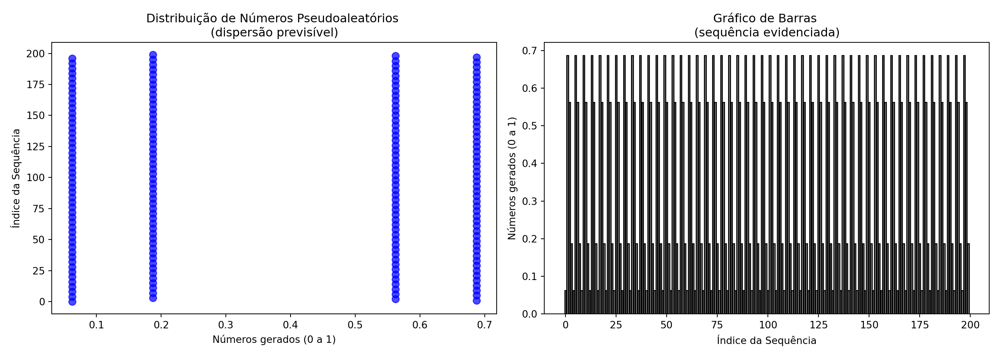
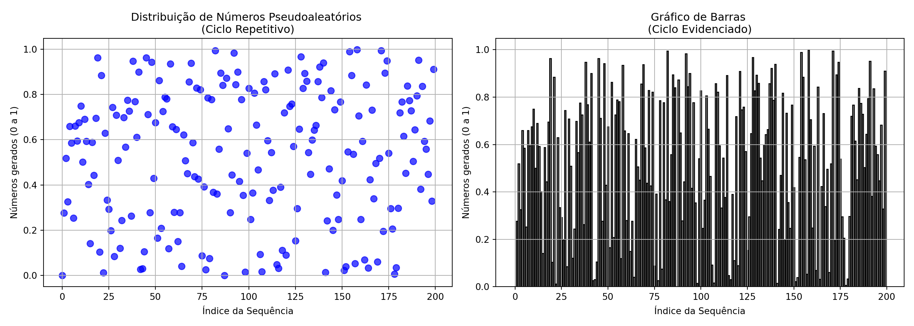
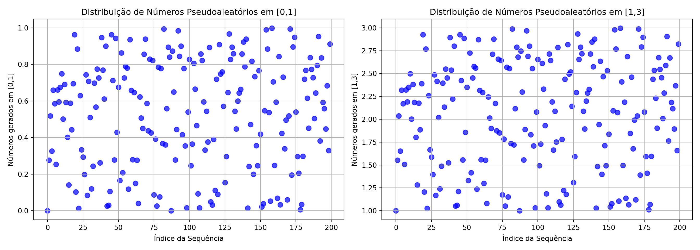
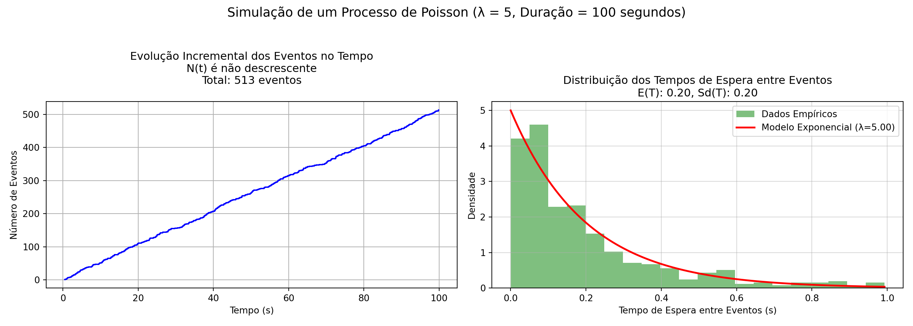
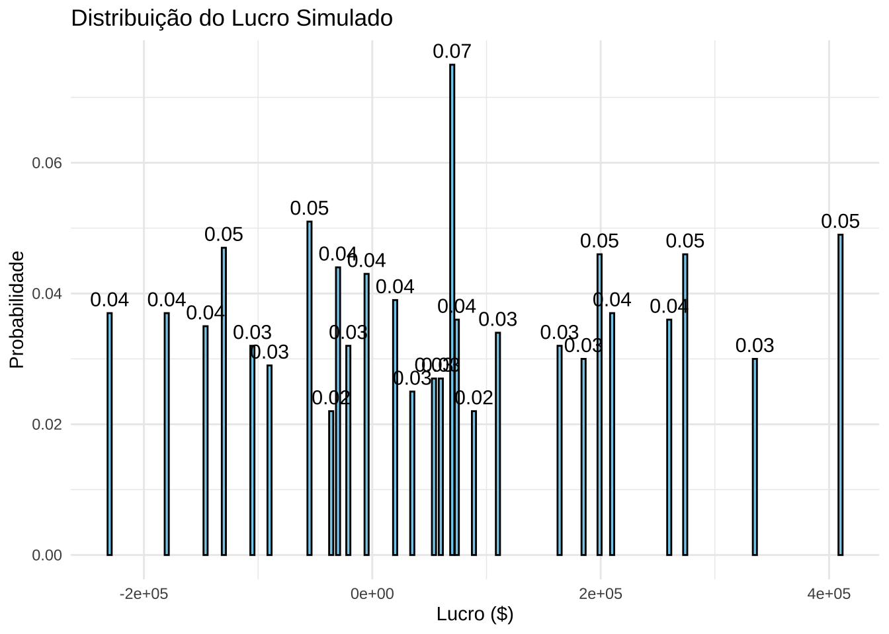

13.5 Simulações Monte Carlo
13.5.1 Introdução
O Método de Monte Carlo, desenvolvido na década de 1940 por Stanislaw Ulam durante seu trabalho no Los Alamos National Laboratory, surgiu como uma ferramenta para simular processos probabilísticos (uma ideia semelhante já havia sido utilizada por Enrico Fermi no estudo da difusão de nêutrons, mas nunca foi publicada). John von Neumann aprimorou o método, implementando-o no ENIAC, o primeiro computador programável da história.
É uma técnica matemática computacional amplamente utilizada para modelar e analisar sistemas complexos, frequentemente caracterizados por elevadas variabilidade e incerteza, nos quais os cálculos analíticos diretos seriam inviáveis devido ao grande número de variáveis ou à complexidade matemática envolvida.
Baseiam-se na amostragem (ou geração) de valores aleatórios (estritamente falando, pseudoaleatórios), obtidos por algoritmos determinísticos - dentro de intervalos plausíveis para variáveis de entrada ie., suas distribuições de probabilidade específicas.
As distribuições de probabilidade podem ser determinadas por:
- dados de séries temporais;
- estimativas de especialistas;
- conhecimento prévio.
A função de distribuição cumulativa (CDF) dá a probabilidade de que a variável aleatória seja menor ou igual a um valor específico. A CDF desempenha um papel importante nas Simulações Monte Carlo.
Cada simulação realizada gera um resultado e, ao serem repetidas um grande número de vezes, esses resultados agregados permitem a aproximação dos parâmetros da distribuição de probabilidade do fenômeno.
A geração de valores aleatórios confiáveis é essencial para que os resultados sejam estatisticamente robustos, garantindo que as simulações ofereçam estimativas precisas e representativas.
Aplicadas em áreas como finanças, engenharia, física e ciência de dados, permitindo a previsão de cenários, a análise de riscos e a otimização de decisões sob incerteza.
13.5.2 Fundamentação
A Lei dos Grandes Números afirma que, à medida que o número de amostras aumenta, a média das observações converge para o valor esperado:
\[ \bar{X}_n = \frac{1}{n} \sum_{i=1}^{n} X_i \to \mathbb{E}[X] \text{ quando } n \to \infty \]
O Teorema do Limite Central afirma que, para um número suficientemente grande de amostras independentes e identicamente distribuídas (i.i.d), a soma das variáveis converge em distribuição a uma distribuição Normal:
\[ \frac{\sum_{i=1}^{n} X_i - n \mu}{\sqrt{n} \sigma} \xrightarrow{d} N(0,1) \]
em que:
- \(\mu\): média da variável aleatória
- \(\sigma\): desvio padrão
Esses teoremas garantem que métodos de Monte Carlo produzam aproximações confiáveis conforme se aumente o número de simulações.
13.5.3 Números Aleatórios e Pseudoaleatórios
Os números verdadeiramente aleatórios são gerados a partir de processos físicos imprevisíveis, como ruído térmico ou decaimento radioativo. Esses métodos são difíceis de implementar computacionalmente devido ao custo e à dificuldade de captura dos fenômenos físicos.
Os números pseudoaleatórios são gerados por algoritmos determinísticos que produzem sequências que se assemelham à aleatoriedade. Um dos métodos mais comuns é o Gerador Congruencial Linear (Linear Congruential Generator – LCG), cuja fórmula matemática é dada por:
\[ X_{i+1} = (a X_i + c) \mod m \]
em que:
- \(X_i\): Valor atual da sequência
- \(a\): Multiplicador
- \(c\): Incremento
- \(m\): Módulo
- \(X_0\): Semente inicial
O módulo (\(m\)) é o valor pelo qual a expressão \((a X_i + c)\) é dividida, e o resto dessa divisão é o próximo número gerado na sequência. Considere como exemplo o LCG com parâmetros \(a=9\), \(c=1\), \(m=17\) e semente \(X_0=7\). O primeiro número aleatório (\(X_0=7\)) será
\[\begin{align} X_{1} & = (9*7+1) \mod 17 \\ X_{1} & = 64 \mod 17 \\ \end{align}\]
Como \(\frac{64}{17} \approx 3,76\), \(64-(3*17)=13\) então \(X_{1} = 13\). A sequência é então normalizada para o intervalo \([0, 1)\) fazendo-se
\[ U_i = \frac{X_{i+1}}{m} \]
Essa normalização é essencial para aplicações que requerem números pseudoaleatórios no intervalo \([0, 1)\) como as CDF.
O método LCG é determinístico, ou seja, dada uma mesma semente inicial (\(X_0\)), ele produzirá sempre a mesma sequência. Isso pode ser problemático em contextos onde a imprevisibilidade é desejada (o código a seguir foi adaptado de link).
from typing import Iterator
from matplotlib import pyplot as plt
# Função para gerar números pseudoaleatórios usando o método do Gerador Linear Congruente (LCG)
def linear_congruential_generator(m: int, a: int, c: int, seed: int) -> Iterator[int]:
"""
Implementa o Gerador Linear Congruente (LCG) para gerar números pseudoaleatórios.
Parâmetros:
- m: Módulo (define o intervalo dos números gerados).
- a: Multiplicador (controla a dispersão dos números).
- c: Incremento (neste caso, 0, pois estamos usando um gerador multiplicativo).
- seed: Valor inicial para iniciar a sequência (semente).
Retorna:
- Um iterador que gera números inteiros pseudoaleatórios entre 0 e m-1.
"""
x = seed # Inicializa a sequência com a semente fornecida
while True:
yield x # Retorna o valor atual de x
x = (a * x + c) % m # Calcula o próximo valor na sequência usando a fórmula do LCG
# Função para gerar uma sequência de números pseudoaleatórios normalizados no intervalo [0,1)
def rand_float_samples(n_samples: int, seed: int = 123456789) -> list[float]:
"""
Gera uma sequência de números pseudoaleatórios normalizados no intervalo [0, 1).
Parâmetros:
- n_samples: Número de números pseudoaleatórios a serem gerados.
- seed: Valor inicial (semente) para iniciar a sequência.
Retorna:
- Uma lista contendo números pseudoaleatórios no intervalo [0, 1).
"""
m: int = 2_147_483_648 # Define o módulo (2^31), garantindo um grande período de números únicos
a: int = 594_156_893 # Define o multiplicador, cuidadosamente escolhido para evitar ciclos curtos
c: int = 0 # Incremento igual a zero, caracterizando um gerador multiplicativo
gen = linear_congruential_generator(m, a, c, seed) # Inicializa o gerador LCG com os parâmetros fornecidos
sequence = [] # Cria uma lista para armazenar os números normalizados
# Gera os números pseudoaleatórios normalizados
for i in range(0, n_samples):
rand: float = next(gen) / m # Normaliza o número gerado para o intervalo [0, 1)
sequence.append(rand) # Adiciona o número normalizado à sequência
return sequence # Retorna a lista completa de números normalizados
# Parâmetros do LCG com ciclo visível
m = 16 # Módulo pequeno para demonstrar a repetibilidade
a = 11 # Multiplicador
c = 0 # Incremento
seed = 1 # Semente inicial X0
n = 200 # Número de amostras para observar o ciclo completo
# Gerar números com o LCG
gen = linear_congruential_generator(m, a, c, seed)
lcg_sequence = [next(gen) for _ in range(n)]
lcg_normalized = [x / m for x in lcg_sequence] # Normalizar para intervalo [0, 1]
indices = np.arange(n)
# Criar subplots lado a lado
fig, axes = plt.subplots(1, 2, figsize=(14, 5))
# Gráfico 1: Dispersão para observar padrão periódico
axes[0].scatter(lcg_normalized, indices, s=50, alpha=0.7, color='blue')
axes[0].set_title('Distribuição de Números Pseudoaleatórios \n(dispersão previsível)')
axes[0].set_ylabel('Índice da Sequência')
axes[0].set_xlabel('Números gerados (0 a 1)')
# Gráfico 2: Barras para visualizar periodicidade
axes[1].bar(indices, lcg_normalized, color='gray', edgecolor='black')
axes[1].set_title('Gráfico de Barras \n(sequência evidenciada)')
axes[1].set_xlabel('Índice da Sequência')
axes[1].set_ylabel('Números gerados (0 a 1)')
# Ajustar layout para melhor visualização
plt.tight_layout()
plt.show()
De acordo com Donald Knuth (The Art Of Computer Programming), um gerador pseudoaleatório linear produz uma sequência aperiódica se as seguintes condições forem satisfeitas:
- Se \(p\) é um número primo que divide \(m\), então \(p\) deve dividir \(c\).
- Se \(m\) é múltiplo de 4, então \(a-1\) também deve ser múltiplo de 4.
- O único número inteiro que divide exatamente \(a\) e \(m\) deve ser 1 (ou seja, \(a\) e \(m\) devem ser coprimos).
Essas condições garantem um período máximo e uma boa distribuição dos números gerados.
# LCG com as condições satisfeitas
n = 200
rand_sequence = rand_float_samples(n)
indices = np.arange(n)
# Criar subplots lado a lado
fig, axes = plt.subplots(1, 2, figsize=(14, 5))
# Gráfico 1: Dispersão no Estilo Solicitado
axes[0].scatter(rand_sequence, range(0, n), s=10, alpha=0.7, color='blue') # Novo estilo aplicado
axes[0].set_title('Distribuição de Números Pseudoaleatórios \n(aparentemente aleatoriamente dispersos)')
axes[0].set_xlabel('Números gerados (0 a 1)')
axes[0].set_ylabel('Índice da Sequência')
# Gráfico 2: Barras
axes[1].bar(indices, rand_sequence, color='gray', edgecolor='black')
axes[1].set_title('Gráfico de Barras \n(nenhuma sequência pode ser visualizada)')
axes[1].set_xlabel('Índice da Sequência')
axes[1].set_ylabel('Números gerados (0 a 1)')
# Ajustar layout
plt.tight_layout()
plt.show()
13.5.4 Geração de amostras aleatórias de distribuições de probabilidade
Os números pseudoaleatórios gerados pelo LCG (\(U_{i})\) seguem uma distribuição uniforme no intervalo \([0,1]\). No entanto, muitos problemas exigem amostras de distribuições diferentes, como a Normal, Exponencial ou Poisson.
13.5.4.1 Método da Transformação Inversa da CDF
A geração de números aleatórios a partir de uma distribuição qualquer pode ser feita por meio da função de distribuição acumulada (CDF). Se \(F(x)\) é a CDF de uma variável aleatória \(X\), então:
\[ X = F^{-1}(U) \]
em que:
- \(U \sim U(0,1)\): número pseudoaleatório uniforme
- \(F^{-1}\): função inversa da CDF da distribuição da variável aleatória \(X\)
Exemplo1: variável aleatória \(X\) que siga uma distribuição uniforme com parâmetros \(a,b\). Sua CDF é
\[ F(x)=\frac{x-a}{b-a} \]
Invertendo-se
\[ F^{-1}(U) = a + U(b-a) \]
Se admitirmos valores \(a=2,b=3\), um valor aleatório \(x\) da variável aleatória \(X\) gerado a partir do número aleatório \(U=0.56\) será \(x=2+0.56*(3-2)=2.56\).
Exemplo 2: variável aleatória \(X\) que siga a distribuição exponencial com parâmetro \(\lambda\). Sua CDF é
\[ F(x) = 1 - e^{-\lambda x} \]
Invertendo-se
\[ F^{-1}(U) = -\frac{1}{\lambda} \ln(1 - U). \]
Se admitirmos um valor de \(\lambda=3\), um valor aleatório \(x\) da variável aleatória \(X\) gerado a partir do número aleatório \(U=0.56\) será \(x= -\frac{1}{3} \ln(1 - 0.56)=0.2729\).
Exemplo 3: variável aleatória \(X\) que siga uma distribuição Normal com parâmetros \(\mu, \sigma\). Sua CDF é
\[ F(x) = \frac{1}{\sqrt{2 \pi \sigma^2}} \int_{-\infty}^{x} e^{-\frac{(t - \mu)^2}{2 \sigma^2}} \, dt\\ \]
Essa função não possui uma inversa fechada em termos de funções elementares. Portanto, sua inversa é frequentemente aproximada numericamente ou expressa em termos da função de erro inversa (\(\operatorname{erf}^{-1}\)).
13.5.4.2 Quando \(F^{-1}(X)\) não possui uma inversa fechada
Método da Aceitação-Rejeição: usado para gerar amostras de uma distribuição-alvo quando a inversa da CDF não está disponível, utilizando uma distribuição auxiliar e uma função de aceitação para gerar amostras.
Método de Newton-Raphson: método numérico iterativo usado para para encontrar aproximações da inversa da CDF resolvendo a equação \(F(X)=U\).
13.5.5 Exemplo 1 (Goodwin e Wright, 2009)
Neste exemplo, analisamos as entradas (cash inflows) e saídas (cash outflows) de caixa de um sistema para se estimar Lucro = Cash inflows - Cash outflows.
Entradas de Caixa (Cash Inflows)
| Cash inflows ($) | Probabilidade | CDF |
|---|---|---|
| 50,000 | 0.30 | 0.3 |
| 60,000 | 0.40 | 0.7 |
| 70,000 | 0.30 | 1.0 |
- Probabilidade de 30% para entrada de caixa de 50,000
- Probabilidade de 40% para entrada de caixa de 60,000
- Probabilidade de 30% para entrada de caixa de 70,000
Saídas de Caixa (Cash Outflows)
| Cash outflows ($) | Probability (%) | CDF |
|---|---|---|
| 50,000 | 0.45 | 0.45 |
| 70,000 | 0.55 | 1.00 |
- Probabilidade de 45% para saída de caixa de 50,000.
- Probabilidade de 55% para saída de caixa de 70,000.
Admitindo-se que aos valores cash inflow sejam uma variável aleatória \(X\) com função distribuição de probabilidade:
\[ P(X = x) = \begin{cases} 0.30, & x = 50,000 \\ 0.40, & x = 60,000 \\ 0.30, & x = 70,000 \\ 0, & \text{outros valores} \end{cases} \]
e que que os valores cash outflow sejam uma variável aleatória \(Y\) com função distribuição de probabilidade:
\[ P(Y = y) = \begin{cases} 0.45, & y = 50,000 \\ 0.55, & y = 70,000 \\ 0, & \text{outros valores} \end{cases} \]
números aleatórios \(U,V\) podem ser gerados e mapeados para valores de cash inflow e cash outflow a partir desses distribuições, e o lucro calculado para cada par de valores.
Etapas da simulação
Passo 1: Gerar valores aleatórios uniformes \(U\)** no intervalo \([0,1]\) para representar Cash Inflows e \(V\)** no intervalo \([0,1]\) Cash Outflows.
Passo 2: Mapeamento para Cash Inflows
Para cada número aleatório \(U\):
- Se \(0 \leq U < 0.30\) → Cash Inflow = 50,000
- Se \(0.30 \leq U < 0.70\) → Cash Inflow = 60,000
- Se \(0.70 \leq U \leq 0.99\) → Cash Inflow = 70,000
Passo 3: Mapeamento para Cash Outflows
Para cada número aleatório \(V\):
- Se \(0 \leq V < 0.45\) → Cash Outflow = 50,000
- Se \(0.45 \leq V \leq 0.99\) → Cash Outflow = 70,000
Passo 4: Cálculo do Lucro
Para cada par de valores simulados:
\[ \text{Lucro} = \text{Cash Inflow} - \text{Cash Outflow} \]
Passo 5: Análise dos Resultados
- Calcule a média dos lucros obtidos.
- Visualize os resultados por meio de gráficos ou tabelas.
# Simulação de Monte Carlo para Fluxo de Caixa Usando U e V
# Parâmetros de Cash Inflows
cash_inflows <- c(50000, 60000, 70000)
prob_inflows <- c(0.30, 0.40, 0.30)
cdf_inflows <- cumsum(prob_inflows)
# Parâmetros de Cash Outflows
cash_outflows <- c(50000, 70000)
prob_outflows <- c(0.45, 0.55)
cdf_outflows <- cumsum(prob_outflows)
# Número de simulações
n_simulations <- 1000
# Geração de números aleatórios independentes para U (Inflows) e V (Outflows)
set.seed(123) # Garante reprodutibilidade
U <- runif(n_simulations) # Para Cash Inflows
V <- runif(n_simulations) # Para Cash Outflows
# Vetores para armazenar resultados
simulated_inflows <- numeric(n_simulations)
simulated_outflows <- numeric(n_simulations)
simulated_profit <- numeric(n_simulations)
# Mapeamento de U para Cash Inflows
for (i in 1:n_simulations) {
if (U[i] < cdf_inflows[1]) {
simulated_inflows[i] <- cash_inflows[1]
} else if (U[i] < cdf_inflows[2]) {
simulated_inflows[i] <- cash_inflows[2]
} else {
simulated_inflows[i] <- cash_inflows[3]
}
}
# Mapeamento de V para Cash Outflows
for (i in 1:n_simulations) {
if (V[i] < cdf_outflows[1]) {
simulated_outflows[i] <- cash_outflows[1]
} else {
simulated_outflows[i] <- cash_outflows[2]
}
}
# Cálculo do Lucro
simulated_profit <- simulated_inflows - simulated_outflows
# Tabela de resultados agregados
profit_table <- as.data.frame(table(simulated_profit))
profit_table$Probability <- as.numeric(profit_table$Freq) / n_simulations
# Gráfico com Probabilidades no Topo das Barras
library(ggplot2)
ggplot(profit_table, aes(x = as.numeric(as.character(simulated_profit)), y = Probability)) +
geom_bar(stat = "identity", fill = "skyblue", color = "black") +
geom_text(
aes(label = sprintf("%.2f", Probability)),
vjust = -0.5,
size = 4
) +
labs(
title = "Distribuição do Lucro Simulado",
x = "Lucro ($)",
y = "Probabilidade"
) +
theme_minimal()
13.5.6 Exemplo 2: The Elite Pottery Company (Goodwin e Wright, 2009)
Neste exemplo, analisamos os custos (Variable Costs), vendas (Sales) e custos fixos (Fixed Costs) de um sistema para estimar: \(Lucro = (Sales - Variable \, Costs) \times Sales - Fixed \, Costs\)
Custos Variáveis (Variable Costs)
| Variable Costs ($) | Probabilidade | CDF |
|---|---|---|
| 13 | 0.30 | 0.30 |
| 8 | 0.40 | 0.70 |
| 18 | 0.30 | 1.00 |
- Probabilidade de 30% para custo variável de 13
- Probabilidade de 40% para custo variável de 8
- Probabilidade de 30% para custo variável de 18
Vendas (Sales)
| Sales | Probabilidade | CDF |
|---|---|---|
| 22,000 | 0.30 | 0.30 |
| 10,000 | 0.40 | 0.70 |
| 30,000 | 0.30 | 1.00 |
- Probabilidade de 30% para vendas de 22,000
- Probabilidade de 40% para vendas de 10,000
- Probabilidade de 30% para vendas de 30,000
Custos Fixos (Fixed Costs)
| Fixed Costs ($) | Probabilidade | CDF |
|---|---|---|
| 175,000 | 0.30 | 0.30 |
| 100,000 | 0.40 | 0.70 |
| 300,000 | 0.30 | 1.00 |
- Probabilidade de 30% para custo fixo de 175,000
- Probabilidade de 40% para custo fixo de 100,000
- Probabilidade de 30% para custo fixo de 300,000
Admitindo-se que os valores Variable Costs sejam uma variável aleatória \(X\) com função distribuição de probabilidade:
\[ P(X = x) = \begin{cases} 0.30, & x = 13 \\ 0.40, & x = 8 \\ 0.30, & x = 18 \\ 0, & \text{outros valores} \end{cases} \]
E que os valores Sales sejam uma variável aleatória \(Y\) com função distribuição de probabilidade:
\[ P(Y = y) = \begin{cases} 0.30, & y = 22,000 \\ 0.40, & y = 10,000 \\ 0.30, & y = 30,000 \\ 0, & \text{outros valores} \end{cases} \]
E que os valores Fixed Costs sejam uma variável aleatória \(Z\) com função distribuição de probabilidade:
\[ P(Z = z) = \begin{cases} 0.30, & z = 175,000 \\ 0.40, & z = 100,000 \\ 0.30, & z = 300,000 \\ 0, & \text{outros valores} \end{cases} \]
Números aleatórios \(U, V, W\) podem ser gerados e mapeados para valores de Variable Costs, Sales e Fixed Costs a partir dessas distribuições, e o lucro calculado para cada conjunto de valores.
Etapas da Simulação
Passo 1: Gerar valores aleatórios uniformes
- \(U\) no intervalo \([0,1]\) para representar Variable Costs.
- \(V\) no intervalo \([0,1]\) para representar Sales.
- \(W\) no intervalo \([0,1]\) para representar Fixed Costs.
Passo 2: Mapeamento para Variable Costs
Para cada número aleatório \(U\):
- Se \(0 \leq U < 0.30\) → Variable Cost = 13
- Se \(0.30 \leq U < 0.70\) → Variable Cost = 8
- Se \(0.70 \leq U \leq 0.99\) → Variable Cost = 18
Passo 3: Mapeamento para Sales
Para cada número aleatório \(V\):
- Se \(0 \leq V < 0.30\) → Sales = 22,000
- Se \(0.30 \leq V < 0.70\) → Sales = 10,000
- Se \(0.70 \leq V \leq 0.99\) → Sales = 30,000
Passo 4: Mapeamento para Fixed Costs
Para cada número aleatório \(W\):
- Se \(0 \leq W < 0.30\) → Fixed Costs = 175,000
- Se \(0.30 \leq W < 0.70\) → Fixed Costs = 100,000
- Se \(0.70 \leq W \leq 0.99\) → Fixed Costs = 300,000
Passo 5: Cálculo do Lucro
Para cada conjunto de valores simulados:
\[ \text{Lucro} = \text{(Sales - Variable Cost)} \times \text{Sales - Fixed Cost} \]
Passo 6: Análise dos Resultados
- Calcule a média dos lucros obtidos.
- Visualize os resultados por meio de gráficos ou tabelas.
# Parâmetros
variable_costs <- c(13, 8, 18)
sales <- c(22000, 10000, 30000)
fixed_costs <- c(175000, 100000, 300000)
prob_variable <- c(0.30, 0.40, 0.30)
prob_sales <- c(0.30, 0.40, 0.30)
prob_fixed <- c(0.30, 0.40, 0.30)
cdf_variable <- cumsum(prob_variable)
cdf_sales <- cumsum(prob_sales)
cdf_fixed <- cumsum(prob_fixed)
# Simulação
n_simulations <- 1000
set.seed(123)
U <- runif(n_simulations)
V <- runif(n_simulations)
W <- runif(n_simulations)
variable_sim <- variable_costs[findInterval(U, cdf_variable) + 1]
sales_sim <- sales[findInterval(V, cdf_sales) + 1]
fixed_sim <- fixed_costs[findInterval(W, cdf_fixed) + 1]
profit <- (25 - variable_sim) * sales_sim - fixed_sim
# Tabela de resultados agregados com probabilidade
profit_table <- as.data.frame(table(profit))
profit_table$Probability <- as.numeric(profit_table$Freq) / n_simulations
# Gráfico com Probabilidades no Topo das Barras
library(ggplot2)
ggplot(profit_table, aes(x = as.numeric(as.character(profit)), y = Probability)) +
geom_bar(stat = "identity", fill = "skyblue", color = "black") +
geom_text(
aes(label = sprintf("%.2f", Probability)),
vjust = -0.5,
size = 4
) +
labs(
title = "Distribuição do Lucro Simulado",
x = "Lucro ($)",
y = "Probabilidade"
) +
theme_minimal()
13.5.7 Exemplo 3: Integração Numérica Usando o Método de Monte Carlo
A integração numérica pelo Método de Monte Carlo é uma técnica amplamente utilizada para aproximar valores de integrais definidas, especialmente quando as funções envolvidas são complexas ou não possuem primitivas analíticas. A ideia central do método é substituir o problema do cálculo integral por um problema de probabilidade.
Etapas
Etapa 1: Pontos aleatórios são gerados uniformemente dentro de um retângulo que cobre a região de integração.
Etapa 2: Cada ponto é testado para verificar se está abaixo ou acima da curva definida pela função \(f(x)\).
Etapa 3: A razão entre os pontos que caem abaixo da curva e o número total de pontos é usada para estimar a área sob a curva, que corresponde ao valor da integral.
A estimativa da integral é calculada por meio da seguinte fórmula:
\[ I \approx \frac{\text{Pontos Abaixo da Curva}}{\text{Total de Pontos}} \times (b - a) \times f_{max} \]
em que:
- \((b - a)\): representa o intervalo de integração.
- \(f_{max}\): é o valor máximo da função no intervalo considerado.
- \(n\): número de pontos aleatórios gerados.
Esse método é especialmente útil quando as funções são complexas ou multidimensionais, tornando os métodos tradicionais de integração inviáveis.
No código a seguir, apresentamos uma implementação generalizada para integrar qualquer função definida em um intervalo arbitrário, com representação visual dos pontos gerados.
Aplicação para a determinação da integral da função \(f(x) = sin(x)\) nos limites \([0 \pi]\):
\[ I = \int_0^{\pi} \sin(x) \, dx \]
Sabemos que a primitiva de \(\sin(x)\) é dada por:
\[ \int \sin(x) \, dx = -\cos(x) + C \\ I = \left[-\cos(x)\right]_0^{\pi}\\ I = -\cos(\pi) + \cos(0)\\ \cos(\pi) = -1 \quad \text{e} \quad \cos(0) = 1\\ I = -(-1) + 1\\ I = 1 + 1 = 2\\ \]
O valor exato da integral de \(f(x) = \sin(x)\) no intervalo \([0, \pi]\) é:
\[ I = 2 \]
Esse resultado analítico servirá como referência para compararmos com os valores obtidos numericamente pelo método de Monte Carlo.
# Função a ser integrada
f <- function(x) {
sin(x)
}
# Parâmetros
a <- 0
b <- pi
f_max <- 1
n <- 10000
# Gerar gráfico com valor da integral exibido
graf <- monte_carlo_integration(f, a, b, f_max, n)
graf